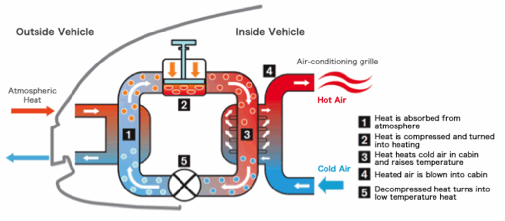

This article will discuss what a Heat Pump is and how it’s used to heat an electric vehicle. But before all that, gas powered automobiles spurred American consumerism and the National Interstate and Defense Highways Act (1956). These petrol peddlers have begun to be phased out as customers sample the fruits of green transportation. The electric vehicle (EV) Tesla Model Y is the natural progression to the gas powered (ICE) Ford Model T. Incentives ranging from the $7,500 tax credit to the Heat Pump will increase EV user adoption, “so that the great American road trip can be electrified.” (Gov.)
“The heat pump is like an air conditioner but in reverse. An air conditioning system takes heat out of your house and pumps it to the hotter outside environment. While the heat pump harvests heat when it’s cold outside and pushes it into the cabin of the car.” (Tesla.) The propriety technology of the heat pump is depicted in Figure 1, Label 2: a piston compresses air to a desired heat and releases it into the car[1]. This method is three times more efficient compared to the prior process of generating hot air by heating metal coils and blowing air over them.
Figure1: Diagram of a Nissan Leaf heat pump. | Image source: Nissan 